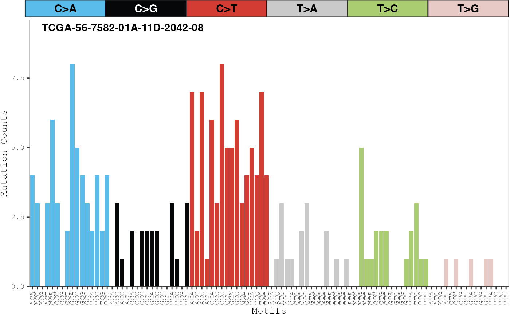

Displays the proportion of counts for each mutation type across one or more samples.
Usage
plot_sample_counts(
musica,
sample_names,
modality = "SBS96",
text_size = 10,
show_x_labels = TRUE,
show_y_labels = TRUE,
same_scale = TRUE,
annotation = NULL,
table_name = NULL
)Arguments
- musica
A
musicaobject.- sample_names
Names of the samples to plot.
- modality
Name of table used for plotting counts. Default
"SBS96".- text_size
Size of axis text. Default
10.- show_x_labels
If
TRUE, the labels for the mutation types on the x-axis will be shown. DefaultTRUE.- show_y_labels
If
TRUE, the y-axis ticks and labels will be shown. DefaultTRUE.- same_scale
If
TRUE, the scale of the y-axis for each sample will be the same. IfFALSE, then the scale of the y-axis will be adjusted for each sample. DefaultTRUE.- annotation
Vector of annotations to be displayed in the top right corner of each sample. Vector length must be equivalent to the number of samples. Default
NULL.- table_name
Use modality instead
Examples
data(musica_sbs96)
plot_sample_counts(musica_sbs96,
sample_names =
sample_names(musica_sbs96)[1]
)
